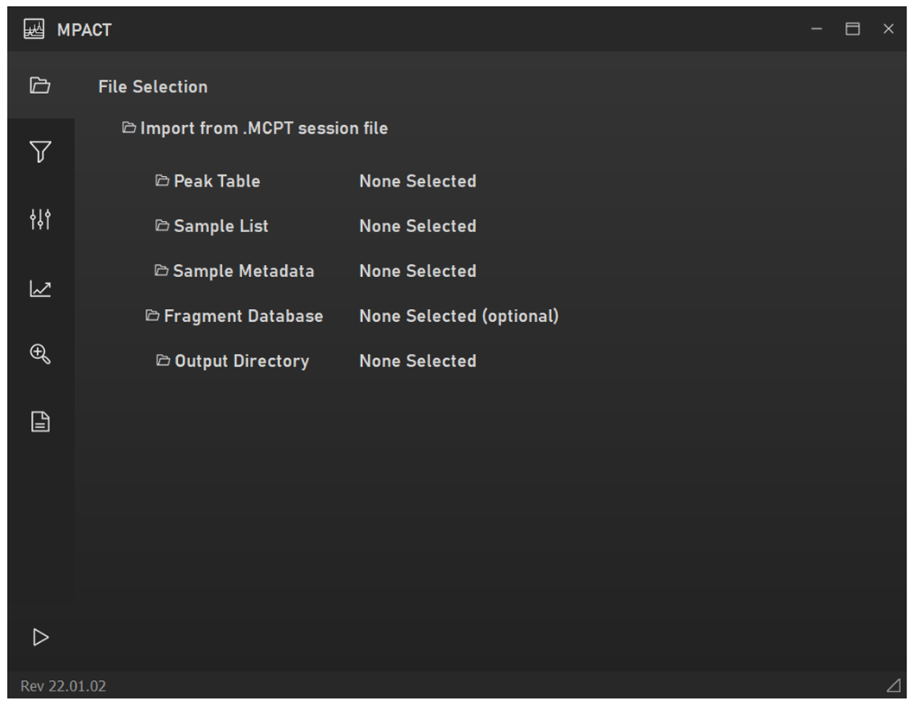
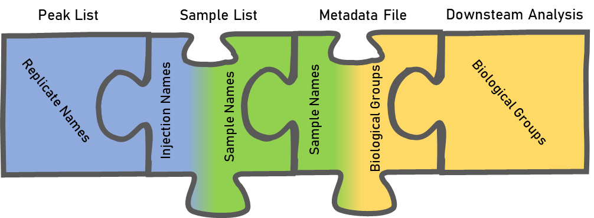
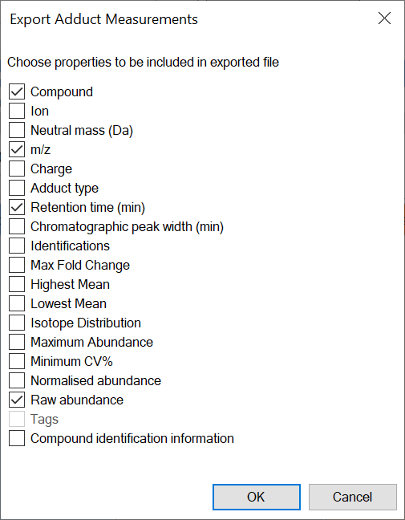
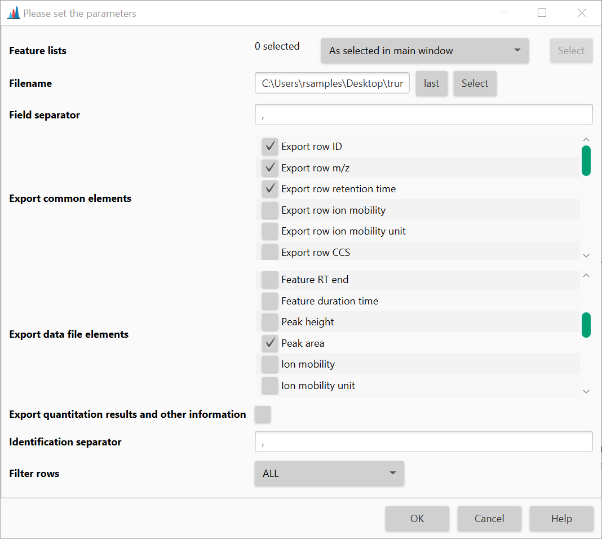
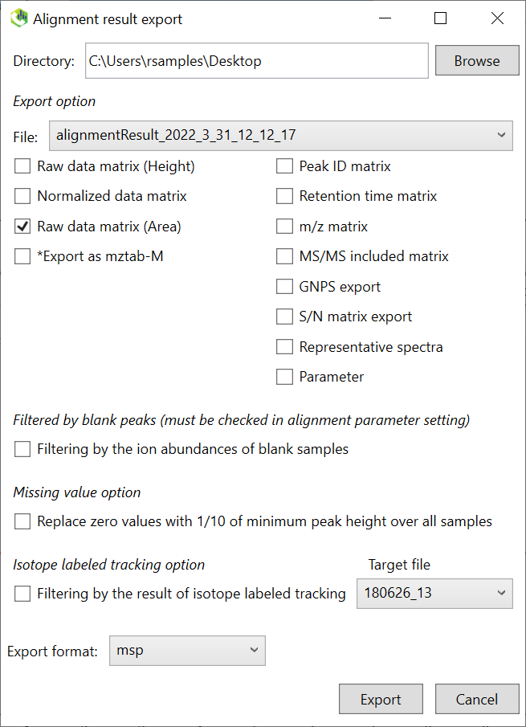
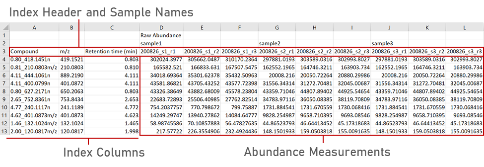
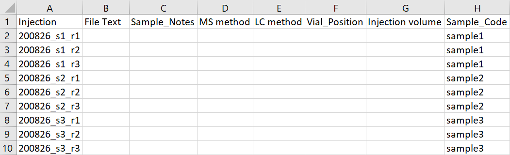
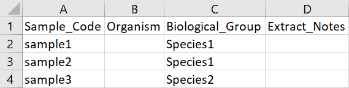

File Selection¶
A minimum of three files are required to analyze a dataset in MPACT:
- A peak table generated by Progenesis QI, MZmine, MS-DIAL, or Bruker Metaboscape.
- A sample list mapping raw-data injection filenames to sample names/codes.
- A metadata file mapping sample names/codes to biological/treatment groups.
You may also specify an output directory for processed data and,
optionally, an MS/MS fragment database (.msp or .mgf) so that MS2
spectra can be viewed per-feature and exported/queried against GNPS(2).

MPACT file selection tab.Peak tables are normally organized by individual injection/data file, but investigators usually care about biological/treatment groups. The sample list and metadata file link injection filenames → sample names → biological groups, which is what makes downstream group-level analysis possible.

Peak table formats¶
Export screenshots may be out of date
The export-dialog screenshots below are from the original 2022 user guide. Progenesis QI, MZmine, and MS-DIAL have all released new versions since then, so menu wording/layout may have shifted slightly — the general export path (aligned/reviewed feature table → export measurements/alignment results as CSV) should still apply.
MPACT natively supports peak tables from Progenesis QI, MZmine, MS-DIAL, and Bruker Metaboscape. The format is auto-detected from file content (not file extension or column position), and non-Progenesis formats are converted in place at import time into MPACT's internal canonical format — you don't need to convert anything by hand.
Acquisition of technical/injection triplicates is highly recommended for maximum reproducibility and to take full advantage of MPACT's filtering and statistics.
Exporting a peak list from Progenesis¶
In the Review Compounds tab, select File → Export Compound Measurements, and export either raw or normalized abundance.

Exporting a peak list from MZmine¶
Generate an aligned feature list, then Feature list methods → Export feature list → CSV (legacy MZmine 2).

Exporting a peak list from MS-DIAL¶
Export → Alignment result, then export with the standard alignment export options.

Editing a peak table from an unsupported platform¶
If hand-converting a peak table from an unsupported platform, the groupings in the first two header rows don't matter for MPACT — all replicate/sample/group information comes from the sample list and metadata file. The third header row does matter: it must contain index headers and individual injection/LC-MS file names. A compound name/ID column, an m/z column, and a retention-time column are required as indices; feature abundance per injection makes up the table body. The easiest path is to reformat into Progenesis-style layout (by hand, or with a short R/Python script).

Example of a Progenesis format peak list. It is possible to import peak table data from currently unsupported platforms by manually editing them into Progenesis format, or with a script (R or Python work well for reformatting).Sample list¶
The sample list requires only an injection/file name column and the corresponding sample name/code column (you can include more columns, but only those two are used). This can usually be copied straight out of your LC-MS sample queue.

An example of an MPACT sample list linking file names in the peak list to sample names/codes.Metadata file¶
The metadata file requires only a sample name/code column and the corresponding biological/treatment group column (again, extra columns are fine).

An example of an MPACT metadata file linking sample names/codes to biological/treatment groups.MS/MS fragment database (optional)¶
If provided, MPACT will parse the .msp/.mgf file and let you view MS2
spectra for matched features in the Feature Info
pane. On export, MPACT also writes out a peak-table-row-order-matched
("re-indexed") copy of the fragment database alongside a filtered copy of
your original peak table — see GNPS2 export
below.
GNPS2 export / re-indexing¶
GNPS2 requires that MSP/MGF entry indices line up with the row order of the peak table you submit alongside them. At the end of every analysis run, MPACT automatically writes:
<name>_filtered_source.<ext>— your original source peak table, row-subset down to the features that survived filtering, in the original source format.<frag>_reindexed.msp/.mgf— your fragment database, renumbered so its entry indices match the filtered peak table's row order.
Matching between fragment entries and peak-table rows is done by
compound-id first (exact match on the shared Comment:/Name (...) field),
falling back to m/z + retention-time tolerance matching when no ID match
exists — this matters because a Progenesis-exported MSP stores neutral
mass, not adduct m/z, so a naive m/z comparison against the peak table's
adduct-m/z column would never match.
Source-format export (_filtered_source) is currently Progenesis-only;
other peak-table formats are converted to the internal format at import
time, so their "source" format isn't preserved for re-export.